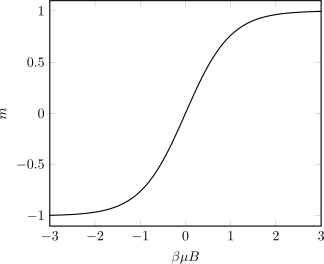
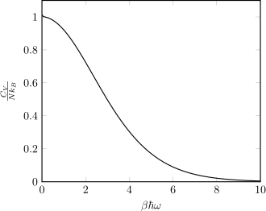
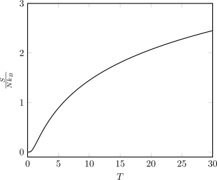

Per un gas perfetto é nota la
|
|
Per calcolare l’entropia é sufficiente utilizzare la relazione
|
|
ricordandosi che la concentrazione quantistica é definita
|
|
Svolgendo i calcoli
|
|
|
|
Ponendo ora h = k + 1 e y = hx e si ottiene
|
|
Considerare un sistema di spin non interagenti, ciascuno con energia ϵ = -sμB, con s = ±1. Trovare
l’energia libera di Helmholtz per un sistema di N spin in un solido.
Cominciamo con lo scrivere la funzione di partizione di unaparticella singola
|
|
Trovandoci in un solido gli spin sono disposti a reticolo, quindi distinguibili. L’energia libera di Helmholtz é
|
|
(a) Sapendo che la magnetizzazione si puó esprimere come M = -, trovare la magnetizzazione per spin
m.
Avendo giá l’energia di Helmholtz possiamo procedere con il calcolo
|
|

(b) Trovare la capacitá termica a campo magnetico costante e verificare la presenza di un’anomalia di
Schottky.
Per il calcolo useremo questa volta la funzione di partizione
|
|
La pressione sul monte Everest é PEv = Patm con Patm = 101.3kPa e la temperatura é TEv ≃ 243K.
Calcolare il libero cammino medio.
Dalla teoria é nota la formula per il libero cammino medio
|
|
Dato che sempre di aria si tratta (sia sull’Everest che al livello del mare) e che non sappiamo d, risulta piú comodo trovare
|
|
Essendo l’aria in buona approssimazione un gas perfetto si puó scrivere la densitá come n = e, inserendo il tutto nella relazione precedente (assumendo Tatm ≃ 300K)
|
|
Dalla teoria é noto latm ≃ 1μm quindi lEv ≃ 2.67μm
Nello spazio intersetllare sono presenti giganti nubi di idrogeno molecolare (lunghezza di legame
0.74 × 10-10m). Sapendo che la massa di una nube é m ~ 4 × 1045kg, il diametro é D ~ 1.42 × 1018m e
la temperatura é T ~ 10K calcolare il libero cammino medio e il tempo di collisione medio.
Calcolando il volume della nube
|
|
e il numero di molecole N = si ottiene
|
|
Il tempo di collisione analogamente é
|
|
Calcolare U e CV per un sistema a due livelli popolato da bosoni.
Dalla teoria é nota la
|
|
Assumiamo i due livelli energetici come
|
|
e in questo caso la funzione di partizione gran canonica diviene
|
|
Dalla definizione di energia interna si puó utilizzare il trucco di Feynman
 |
Possiamo ora calcolare l’energia interna
 |
Per la capacitá termica é sufficiente utilizzare la relazione
|
|
(a) Mostrare che la funzione di partizione gran canonica per la radiazione di corpo nero assume la forma
| (1) |
La radiazione di corpo nero é costituita da fotoni, ossia bosoni. Dalla teoria (vista in classe) é nota la
funzione di partizione gran canonica bosonica:
|
|
Osservando ora come si possano aggiungere/rimuovere fotoni ad un corpo nero senza alcun costo energetico
(μ = 0) la 1 diviene ovvia.
(b) Usando l’equazione 1 oppure in altro modo si dimostri che l’entropia per unitá di volume della
radiazione di corpo nero a temperatura T assume la forma
| (2) |
Richiamiamo ora l’energia per unitá di volume della radiazione di corpo nero (eq. 9.20 Kennett)
|
|
e anche la sua pressione (eq. 9.29 Kennett)
|
|
Richiamando ora la relazione termodinamica
| (3) |
ponendo μ = 0 (vedi punto a) e dividendo per il volume V , si ottiene
|
|
che unita alle precedenti conclude la dimostrazione
|
|
Calcolare la temperatura critica per un BEC in 2 dimensioni.
Richiamiamo ora la densitá degli stati 2D calcolata in precedenza:
 |
Possiamo calcolare il numero medio di particelle con la classica formula
|
|
la quale, posto n = diventa
|
|
Per la temperatura critica si ha eβ0 >> 1 e si puó approssimare
|
|
la cui soluzione é
|
|
Invertendo l’equazione precedente si ottiene la relazione desiderata
|
|
(a) Calcolare la capacitá termica CV per un sistema di N oscillatori armonici distinguibili, ciascuno con
energia ϵs = ℏω studiandone i limiti a basse (kBT << ℏω) e alte (kBT >> ℏω) temperature.
Si puó subito calcolare la funzione di partizione dalla definizione
|
|
Richiamiamo ora la formula per l’energia interna
![∂ ln(ZN ) ∂ [ ℏω ]
U = - ---∂β1--= - N ∂β-ln(eβ2 )- ln(eβℏω - 1) =
[ ]
= - N ∂-- βℏω-- ln(eβℏω - 1) =
∂[β 2 ]
ℏω- -ℏωeβℏω-
= - N 2 - eβℏω - 1 =
[1 eβℏω ]
= - N ℏω - - -βℏω---- =
[ 2 e - 1]
= N ℏω ----1----- 1
1- e-βℏω 2](b_exercises_soluzioni_materia49x.svg) |
Da qui é possibile ricavare la capacitá termica
![[ ]
C = ∂U- = Nℏω -∂- ----1----- 1 =
V ∂T ∂T 1 - e- βℏω 2
( ℏω) ( -1) -βℏω
= N ℏω---kB----T2--(--e----)=
(1- e-βℏω)2
NkB (β ℏω)2(e-βℏω)
= - ---(1---e--βℏω-)2----=
2
= --βℏNω-kB(βℏω-)-βℏω-
(e - 1)(1- e )](b_exercises_soluzioni_materia50x.svg) |

(b) Paragonare graficamente il risultato ottenuto con il caso del sistema a due livelli (con energie ϵ1 = - e
ϵ2 = ) evidenziandone analogie e differenze.
Analogamente a prima
|
|
L’energia interna viene
|
|
e di conseguenza la capacitá termica
|
|
(c) Opzionale Interpretare l’andamento alle alte T attraverso il teorema dell’equipartizione dell’energia.
Avendo N oscillatori armonici con 2 gradi di libertá quadratici ciascuno con contributo kBT ritroviamo la
capacitá termica a NkB.
(a) Calcolare l’entropia S per un sistema di N oscillatori armonici distinguibili, spiegando perché allo
zero assoluto (T = 0) S = 0 e studiandone l’andamento (e la dipendenza da T) alle alte T.
Dalla teoria usiamo la formula dell’entropia
![[ ]
S = - ∂F = NkB -∂-T lneβℏω2 - ln(eβℏω - 1) =
∂T [ ∂T ]
= NkB -∂-T β ℏω-- ln(eβℏω - 1) =
∂T 2
= - N k-∂-[T ln(eβℏω - 1)] =
B∂T ( )
⌊ ℏω (--12) (eβℏω)⌋
= - N kB⌈ln(eβℏω - 1)+ T-kB---T--------⌉ =
eβℏω - 1
[ βℏω ]
= NkB ------βℏω-- ln(eβℏω - 1)
1 - e](b_exercises_soluzioni_materia59x.svg) |

Per T = 0, S = 0 in quanto avendo tutte le particelle allo stesso livello energetico ho solo una disposizione
possibile S = k lnΩ = k ln1 = 0.
(b) Opzionale Stimare il numero di stati occupati ad alte temperature.
Non avendo restrizioni sul numero di oscillatori per livello energetico possiamo considerare questi come
bosoni. Dalla teoria l’occupazione dei bosoni é data dalla
|
|
Inserendo nella formula precedente l’espressione dell’energia fornita nell’esercizio 1 e facendo il limite per alte temperature si trova
 |
(c) Paragonare graficamente il risultato ottenuto con il caso di un gas di molecole diatomiche. Per
il calcolo dell’entropia del gas di molecole diatomiche considerare solo i contributi dovuti al
moto traslazionale (Zt) e rotazionale (Zr), considerando che per temperature superiori alla
temperatura caratteristica del moto rotazionale θr la funzione Zr si puó approssimare a .
Ricaviamo innanzitutto la funzione di partizione
|
|
Analogamente al punto precedente
|
|